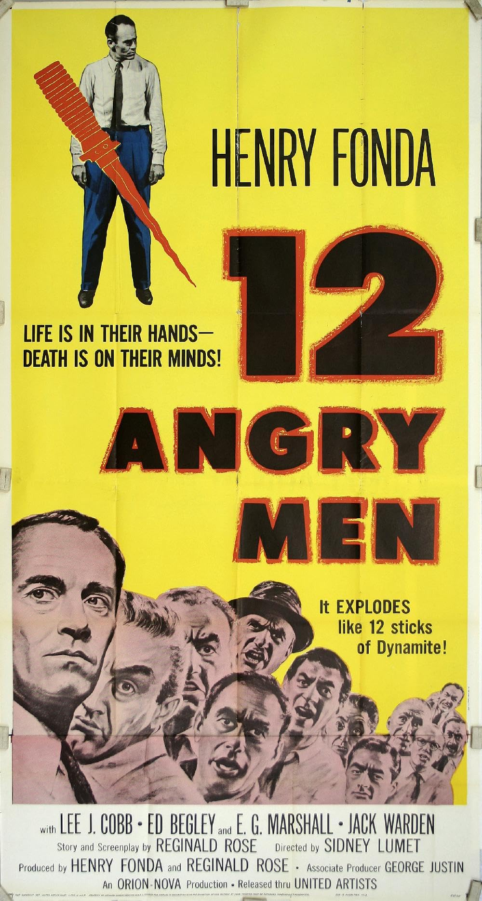
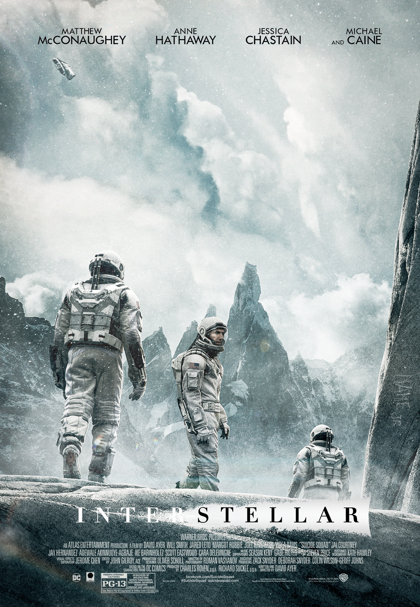
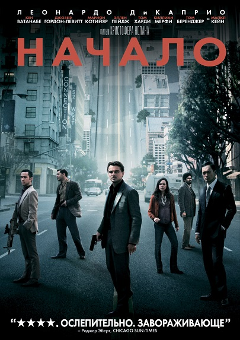
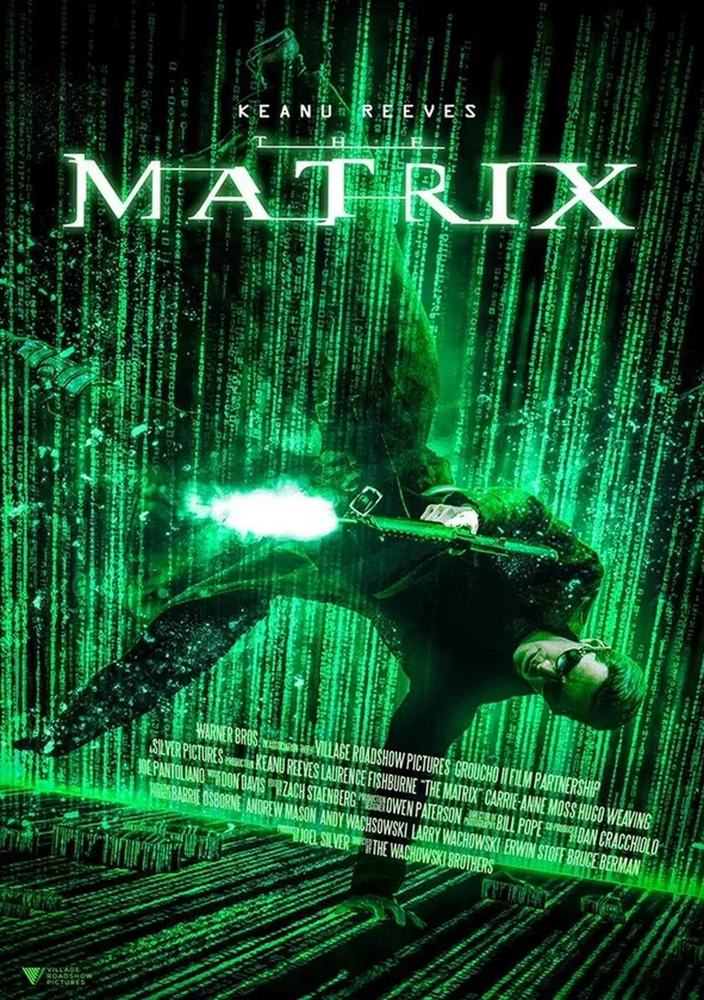

1: Побег из Шоушенка
Год съёмки: 1994
Актёрский состав:Тим Роббинс (Энди Дюфрейн), Морган Фриман (Эллис «Ред» Реддинг), Боб Гантон (Сэмюэл Нортон, начальник тюрьмы), Уильям Сэдлер, Клэнси Браун и другие.
Сюжет: Банкир Энди Дюфрейн несправедливо осуждён на два пожизненных срока за убийство жены и её любовника. В тюрьме он заводит дружбу с заключённым Редом и становится помощником начальника тюрьмы. Энди сохраняет надежду и постепенно реализует план побега.
Идея: Сила человеческого духа, вера в справедливость и надежда способны преодолеть даже самые мрачные обстоятельства. Фильм подчёркивает важность сохранения человечности в бесчеловечных условиях.

2:Крёстный отец
Год съёмки: 1972
Актёрский состав: Марлон Брандо (Вито Корлеоне), Аль Пачино (Майкл Корлеоне), Джеймс Каан (Сонни Корлеоне), Роберт Дюваль (Том Хейген), Дайан Китон и другие.
Сюжет: Фильм рассказывает о семье Корлеоне — сицилийском мафиозном клане в Нью-Йорке. Фокус сделан на трансформации младшего сына Майкла из скромного человека в безжалостного босса мафии после покушения на жизнь отца.
Идея: Исследование природы власти, семьи и морали в криминальном мире. Фильм показывает, как семейные ценности переплетаются с жестокостью и предательством.

3: Тёмный рыцарь
Год съёмки: 2008
Актёрский состав: Кристиан Бэйл (Бэтмен/Брюс Уэйн), Хит Леджер (Джокер), Гари Олдман (лейтенант Джим Гордон), Аарон Экхарт (Харви Дент) и другие.
Сюжет: Бэтмен, окружной прокурор Харви Дент и лейтенант Гордон объединяются, чтобы очистить Готэм от преступности. Однако появление Джокера, хаотичного и жестокого преступника, погружает город в хаос. Дент становится «белым рыцарем», но после травмы превращается в Двуликого.
Идея: Противостояние порядка и хаоса, исследование природы зла и морали. Фильм задаёт вопросы о том, что такое справедливость и как далеко можно зайти в борьбе со злом.

4: 12 разгневанных мужчин
Год съёмки: 1957
Актёрский состав: Генри Фонда (присяжный №8), Мартин Болсам, Ли Дж. Кобб, Джек Уордан и другие.
Сюжет: Двенадцать присяжных заседателей обсуждают дело подростка, обвиняемого в убийстве отца. Одиннадцать из них готовы вынести вердикт «виновен», но присяжный №8 сомневается в виновности и убеждает остальных в невиновности юноши, подвергая сомнению все «улики».
Идея: Важность сомнения, справедливости и критического мышления. Фильм показывает, как предубеждения и поспешные суждения могут привести к трагической ошибке.

5: Список Шиндлера
Год съёмки: 1993
Актёрский состав: Лиам Нисон (Оскар Шиндлер), Бен Кингсли, Рэйф Файнс (Амон Гёт), Кэролайн Гудолл и другие.
Сюжет: Немецкому бизнесмену Оскару Шиндлеру удаётся спасти евреев из концлагерей, наняв их на свою фабрику. Постепенно он осознаёт ужасы Холокоста и тратит все средства, чтобы спасти как можно больше людей.
Идея: Человечность в бесчеловечных условиях. Фильм показывает, как один человек может изменить судьбы многих, даже находясь в системе зла.

6: Властелин колец: Возвращение короля
Год съёмки: 2003
Актёрский состав: Элайджа Вуд (Фродо), Вигго Мортенсен (Арагорн), Иэн МакКеллен (Гэндальф), Орландо Блум (Леголас) и другие.
Сюжет: Заключительная часть трилогии о хоббите Фродо и его спутниках, которые пытаются уничтожить Кольцо Всевластия. В фильме показаны масштабные битвы, включая осаду Минас-Тирита, и возвращение Арагорна на трон Гондора.
Идея: Борьба добра со злом, сила дружбы и самопожертвование. Фильм подчёркивает важность единства разных народов в противостоянии тьме.

Фильм 8: Интерстеллар
Год съёмки: 2014
Актёрский состав: Мэттью Макконахи, Энн Хэтэуэй, Джессика Честейн, Майкл Кейн
Сюжет: В будущем, когда засуха и пыльные бури угрожают выживанию человечества, группа исследователей отправляется сквозь червоточину в космосе, чтобы проверить потенциально обитаемые планеты на пригодность для переселения. Путешествие заставляет героев столкнуться с парадоксами времени и пространства.
Идея: Основная идея фильма — показать силу человеческой любви и связи, способной преодолеть время и пространство. Фильм исследует концепцию того, что эмоции могут быть физической силой, влияющей на реальность.

Фильм 9: Начало
Год съёмки: 2010
Актёрский состав: Леонардо Ди Каприо, Марион Котийяр, Эллен Пейдж, Том Харди
Сюжет: Профессиональный вор, специализирующийся на краже секретов из подсознания во время сна, получает задание не украсть, а внедрить идею. Это опасная миссия, которая может изменить всё. По мере продвижения по уровням сновидений реальность всё сильнее размывается.
Идея: Фильм исследует природу реальности и сновидений, показывая, как идеи могут управлять нашей жизнью. Основная мысль — то, что мы считаем реальностью, может быть всего лишь конструкцией нашего сознания.

Фильм 10: Матрица
Год съёмки: 1999
Актёрский состав: Киану Ривз, Лоренс Фишбёрн, Кэрри-Энн Мосс, Хьюго Уивинг
Сюжет: Программист Томас Андерсон ведёт двойную жизнь под хакерским псевдонимом Нео. Однажды он узнаёт, что мир вокруг — это иллюзия, созданная разумными машинами. Присоединившись к восстанию против системы, он должен стать Избранным, способным изменить ход истории.
Идея: Центральная идея фильма — вопрос о природе реальности и свободе воли. Картина заставляет задуматься о том, насколько наша жизнь предопределена внешними силами и можем ли мы по‑настоящему контролировать свою судьбу.